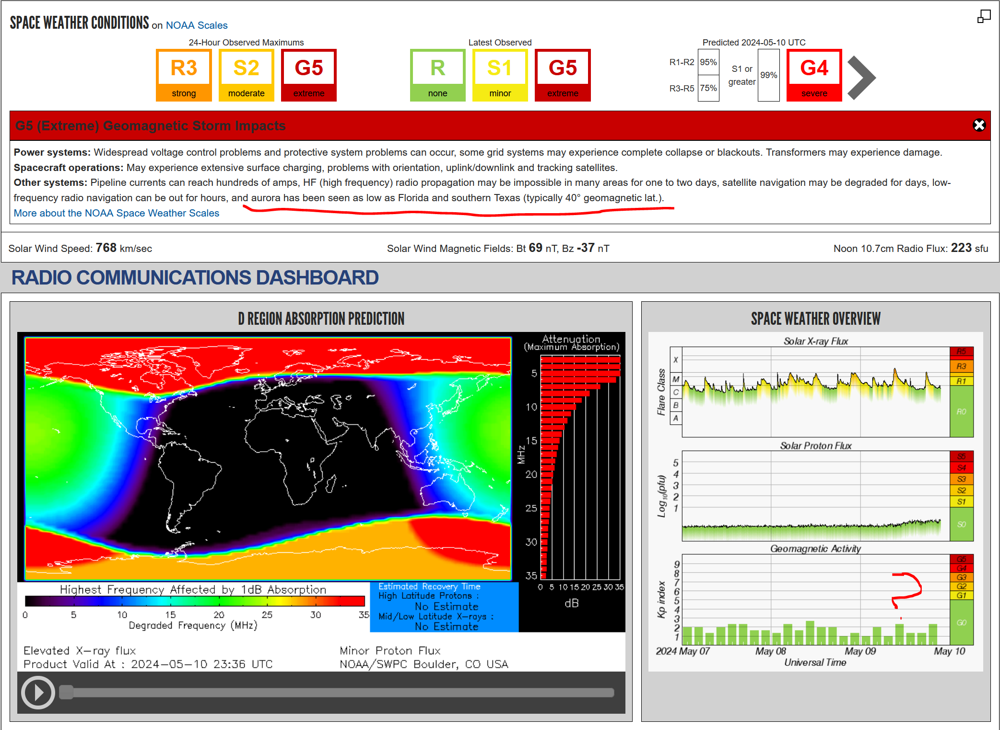

Historic event time but the NOAA page isn't updating Kp for some reason (after the text).
Rick nk7i
| Subject: | ALERT: Geomagnetic K-index of 9 (G5) |
|---|---|
| Date: | Fri, 10 May 2024 16:39:57 -0700 (PDT) |
| From: | SWPC Product Subscription Service <SWPC.Products@noaa.gov> |
| To: | Rick.NK7I@gmail.com |
Space Weather Message Code: ALTK09 Serial Number: 6 Issue Time: 2024 May 10 2334 UTC ALERT: Geomagnetic K-index of 9o Threshold Reached: 2024 May 10 2254 UTC Synoptic Period: 2100-2400 UTC Active Warning: Yes NOAA Scale: G5 - Extreme NOAA Space Weather Scale descriptions can be found at www.swpc.noaa.gov/noaa-scales-explanation Potential Impacts: Area of impact primarily poleward of 40 degrees Geomagnetic Latitude. Induced Currents - Widespread voltage control problems and protective system problems may occur; some power grid systems may experience component failures or protective device trips resulting in blackouts or disruption of service. Pipeline currents can reach hundreds of amps. Spacecraft - Systems may experience anomalies to include: extensive surface charging, unexpected orientation and attitude changes, uplink/downlink errors, and satellite orbit degradation. Navigation - Satellite navigation (GPS) may be degraded or unavailable for days. Radio - HF (high frequency) radio propagation may be impossible in many areas for one to two days. Aurora - Aurora may be seen as low as Florida to southern Texas and southern California.
